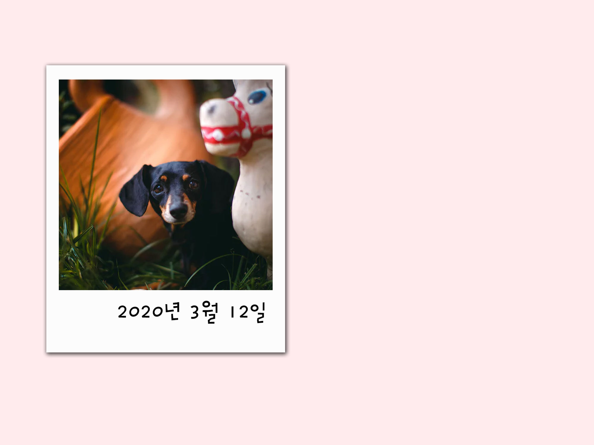
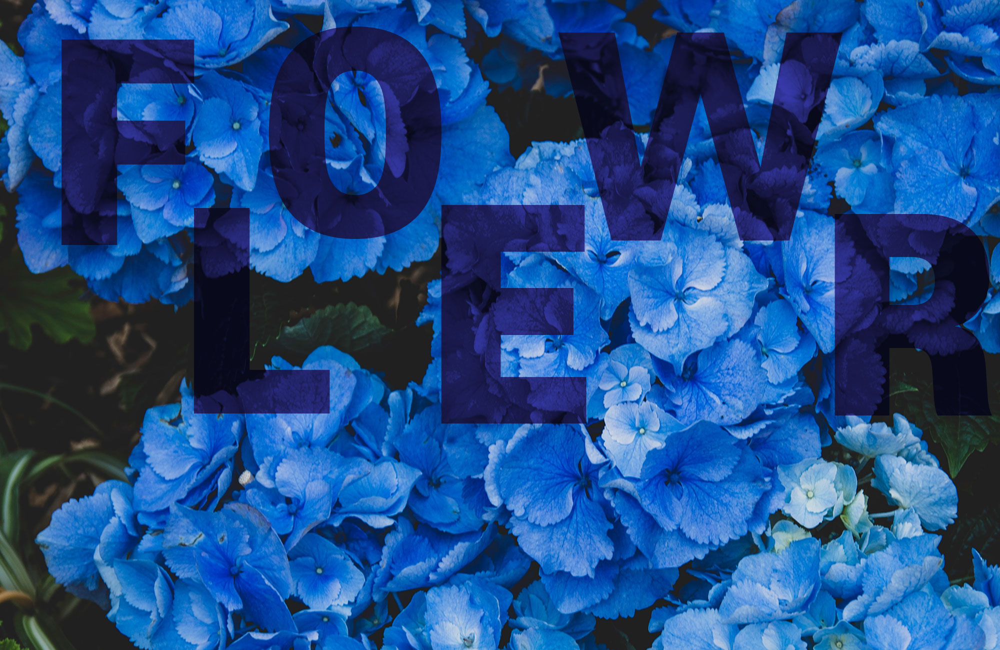
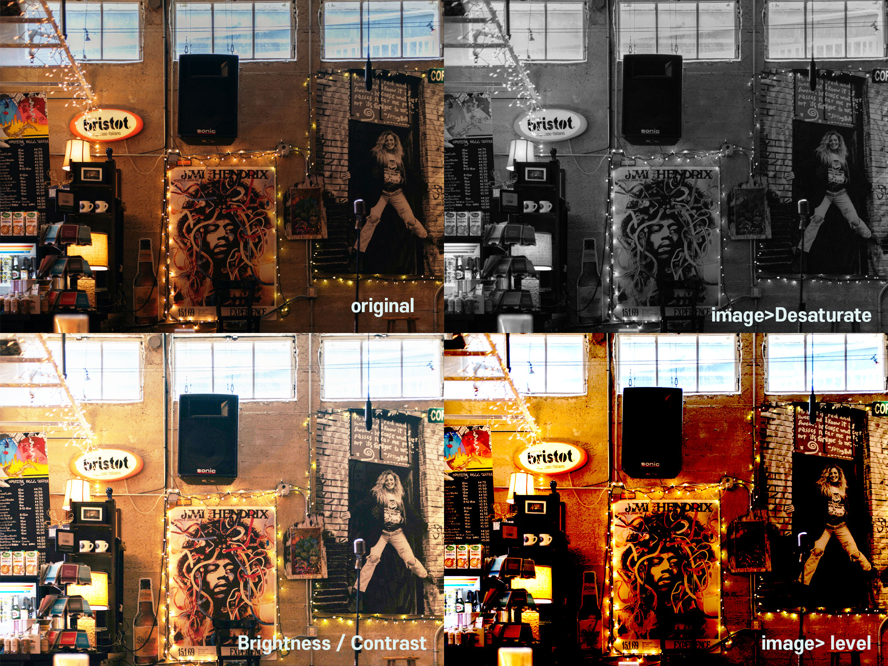
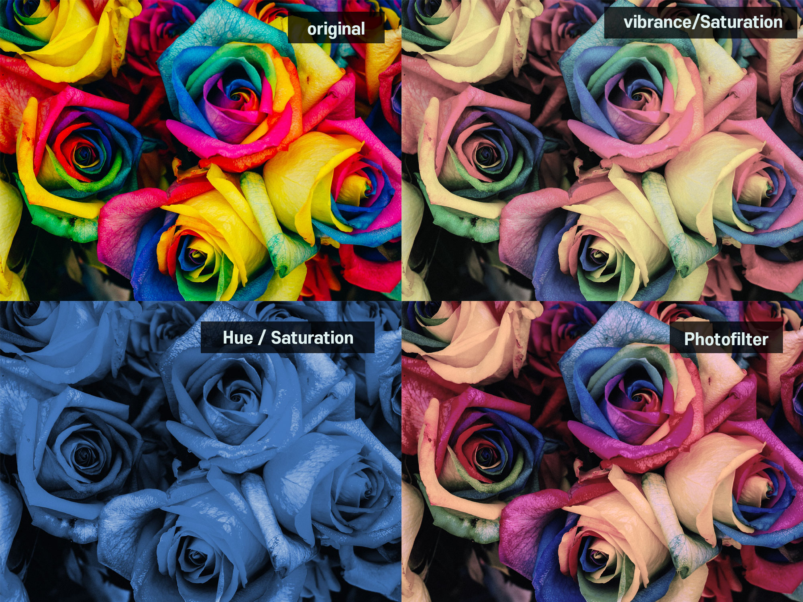
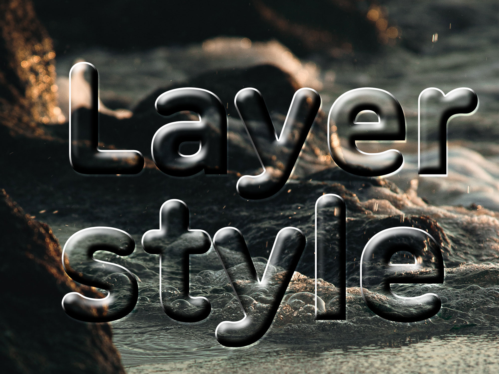
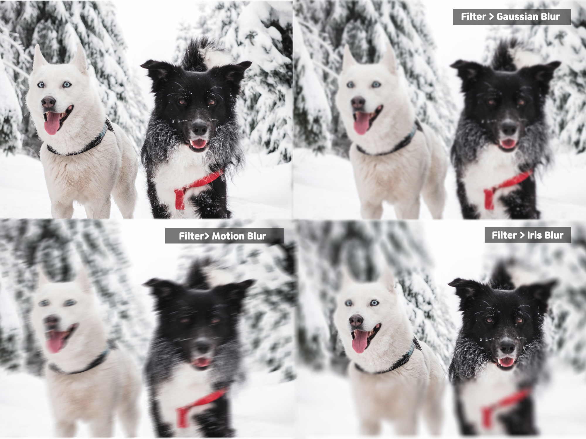

Cheetsheet
- 새 파일 만들기 : Ctrl + N
- 레이어 패널 : F7
- 작업 취소하기 : Ctrl + Z
- 이미지 불러오기 : Ctrl + O
- 환경 설정 : Ctrl + K
- 크기 변경하기 : Ctrl + T
- 전경색 바꾸기 : Alt + DEL
- 영역 반전 : Ctrl + Shift+ I
- 흑백으로 바꾸기 : Ctrl + Shift+ U
- 효율성 보기 : F8
- 줄자 보이기 : Ctrl + R
- 레이어복사: Ctrl + J
- 글자 이미지화: Ctrl + E
- 체도 변경 : Ctrl + U
- 레이어 그룹화 : Ctrl + G
- 화면크기 조정 : ctrl + 스페이스바 + 드래그
- 가이드 라인 지우기 : Ctrl + ;
- 레이어 상관 없이 이동 : (툴박스 이동으로 하고) ctrl 누른 상태에서 이동
- 이동(툴박스) : V
- 도형(툴박스) : U
- 글씨(툴박스) : T
클리핑 마스크
포토샵 시작전 쓰고 있는 컴퓨터와 효율성이 100% 확인 해야 한다
- 효율성 단축키 F8
- 왼쪽 상단 클릭 panel options... 클릭
- staus information 박스에서 Effciency 체크하기
- Effciency가 100%
사진 불러오기
- 포토샵 새파일 설정을 2000/1500으로 설정
- 사이트에서 원하는 사진 5장 다운
- 5장의 사진 불러오기 단축키 Ctrl + O
- 각 사진마다 레이어에 있는 잠금표시 해제
참고 이미지 사이트 : https://unsplash.com/ (상업적으로 사용할수 있음)
전경색 바꾸기
- 틀박스 아래 있는 색상 변경하기 클릭하여 색상 설정
- 전경색을 단축키로 변경 (Alt + DEL)
참고 컬러 사이트 :https://materializecss.com/color.html
사진 편집
- 틀 박스에 있는 도형 (단축키 U) 변경
- 5개 박스 만들기
- 원하는 만큼 크기 변경 (단축키Ctrl + T) (변형되지 않게 하는 것이 중요)
- 사진을 박스로 드래그(변형안되게 위 방법도 똑같이)
- 사진레이어를 클릭후 Alt 누르고 박스 레이어 클릭
- 원본 사진 훼손하지 않고 사진 편집(클리핑 마스크)
글자편집
- 단축키 T 원하는 글자 ex) "댕댕이"
- 원하는 만큼 크기/색상 조절
이미지/글자 효과주기
- 오른쪽 하단 'fx' 클릭
- stroke 클릭 후 사진을 보면서 원하는 효과 표현
- position를 inside로 설정 (액자같이 표현할수 있음)
- drop shadow 클릭 후 액자 효과 표현
효과 복사하기
- 효과가 들어간 레이어 오른쪽마우스클릭
- copylayerstaly 클릭
- 효과를 주고 싶은 레이어를Ctrl 누르고 선택
- 오른쪽 마우스 클릭 후 pastelayerstaly 클릭
전체적으로 정리후 저장
레이어 마스크
원본 훼손하지 않고 편집하기
사진 불러 오기
원하는 글꼴/폰트 정하기
”flower” 한 글짜씩 작성후 이미지화 실시 ( 폰트/글꼴 이미지화 단축키 ctrl + E )
이미지화 한 글꼴에 영역 설정하기
- 글꼴 레이어 선택후 ctrl 누른 상태에서 다시 한번 글꼴 레이어 클릭( 빈 곳클릭 하면 안됨)
레이어 마스크 하기
- 사진레이어 선택
- 오른쪽 하단 “fx” 옆에 레이어 마스크 클릭 하기
레이어 복사하기
- 합해진 레이어 선택
- 레이어 복사 (단축키 ctrl + J) 복사 완료
복사된 레이어에서 글꼴 레이어를 단독으로 오른쪽 하단 휴지통 모양으로 드래그
글꼴과 배경이 합해진 레이어 선택후 채도 변경하기 (단축키 ctrl + U )
창 오른쪽 하단 1번째 체크란에 체크
화면을 확인하며 원하는 대로 변경
완성!!
색상모드
다양한 색상 모드를 변환할수 있다.
상단 Image 클릭하면 여러종류의 색상 변환 효과가 있다.
- Deseturate :흑백 효과를 넣어준다 (단축키Ctrl + Shift+ U)
- Brightness/ contrast : 밝기 조절
- level : 어두운 부분은 어둡게 밝은 부분은 더욱 밝게
Adjustments 효과

- vibrance/ Saturation
- Hue/ Saturation
- Photofilter
Layer Style 효과
교재 p132.
- 단어를 이미지화 : 레이어 선택후 마우스 오른쪽 pasterize layer
- Fill(투명도) 조절 : 0으로 설정
- 오른쪽 하단 layers 패널에서 'fx' 클릭후 bevel Emboss 클릭
- [style] - 'inner bevel' 설정
- [Technique] - 'Smooth' 설정
- [Depth] - '500' 설정
- [Direction] - 'UP'설정
- [Size] - '30' 설정
- [Soften] - '15' 설정
- [Angle] - '120' 설정
- [Use Global Light] 체크
- [Altitude] - '30'설정
- [Gloss Contour] - 'Linear' 설정
- [Highlight Mode] /[Shadow Mode] - 'Overlay' 설정
- [Opacity]- '100'
- 색 상자는 흰색으로 설정
Blur 효과
내사진 smudge 효과

순서
- 원하는 사진 불러오기 ( 되도록 보정이 안된 사진을 넣어야 효과 넣을때 잘 나온다)
- 펜툴로 원하는 영역을 선택
- 복사하기 ( 단축키 Ctrl + J )
- 새로운 레이아웃 생성
- 배경 레이아웃 선택후 노이즈/ 블러 효과 주기
- 사진 레이아웃 선택후 명암 주기 (선명하게 ) 단축키 :Ctrl + L
- Ctrl + U 붉으스름하게
- 스펜 효과 주기
- 블러 툴 이용하기 ( 손가락 표시)
- 붓 터치 한것 처럼 표현하면 완성